Random Forest
บทที่ 7 : Random Forest Algorithm
ถึงแม้ว่า Decision tree จะเป็นโมเดลที่สร้างง่าย ใช้งาน และแปลผลง่าย แต่โดยทั่วไปแล้ว ประสิทธิภาพการทำนายของ decision tree มักไม่ค่อยดี และสุ่มเสี่ยงที่จะเกิดปัญหา overfitting ได้ง่ายอีกด้วย
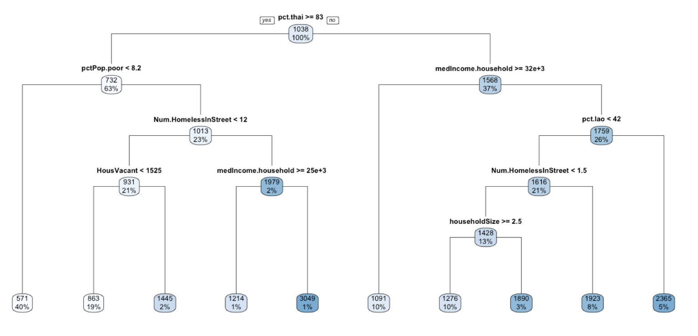
7.1 Basic Concepts
จากข้อจำกัดของ decision tree (รวมทั้ง ML แบบ single learner ตัวอื่น ๆ ) จึงมีการพัฒนาวิธีการสร้างโมเดลทำนายโดยใช้การรวมผลทำนายจากชุดข้อมูล bootstrap เรียกว่า bootstrap aggregation (bagging) รูปด้านล่างแสดงแนวคิดพื้นฐานของ bagging method
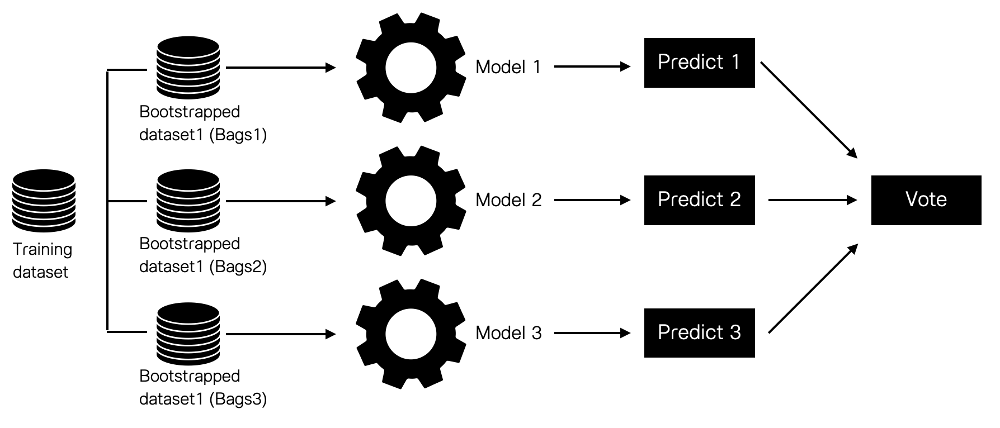
random forest ในยุคแรกใช้แนวคิดของ bagging ข้างต้นโดยตรง โดยมีขั้นตอนการดำเนินงานดังนี้
กำหนดให้ training dataset ของผู้วิเคราะห์มีขนาด n หน่วย
สร้าง bootstrap dataset โดยใช้การสุ่มตัวอย่างแบบใส่คืน ขนาด n หน่วย (sampling with replacement) จากชุดข้อมูล trainng data
นำชุดข้อมูลแต่ละชุดมาสร้าง decision tree
ทวนซ้ำขั้นตอนที่ 1 และ 2 จนครบ bootstrap dataset ทั้งหมด
นำผลทำนายจาก bootstrap dataset แต่ละชุดมาหา majority vote
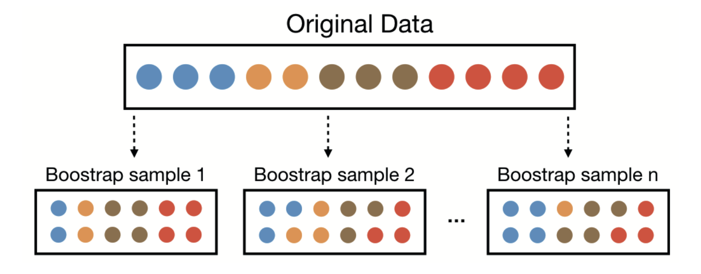
ตัวอย่าง bootstrap dataset
อย่างไรก็ตาม bagging tree ข้างต้นมีข้อจำกัดกล่าวคือในแต่ละรอบของการทวนซ้ำ อัลกอริทึมมักสร้าง decision tree ที่ซ้ำซ้อนกัน ซึ่งให้ประสิทธิภาพการทำนายไม่ได้ดีขึ้นเท่าที่ควร จากข้อจำกัดนี้จึงมีการพัฒนา random forest algorithm ขึ้น ซึ่งมีรายละเอียดดังนี้
1. สร้าง training dataset
2. กำหนด hyperparameter ของโมเดล
3. สร้าง bootstrap dataset จาก traning dataset
4. สร้าง decision tree จาก bootstrap dataset ดังกล่าวภายใต้เงื่อนไขของ hyperparameter ที่กำหนด
5. นำ decision tree ใน 4. ไปคำนวณ error ใน OOB แล้วเก็บค่าไว้
6. ทวนซ้ำ 3 - 5 ใหม่ จนได้จำนวน tree model ครบตามกำหนด นำ OOB error ของ model ทั้งหมดมาเฉลี่ยรวมกันจะได้ error ของ random forest
7. ทวนซ้ำ 2. ถึง 6. ใหม่ด้วย cross-validation จนครบทั้ง hyperparameter grid นำ error ทั้งหมดมาวิเคราะห์เพื่อเลือก hyperparameter ชุดที่ดีที่สุด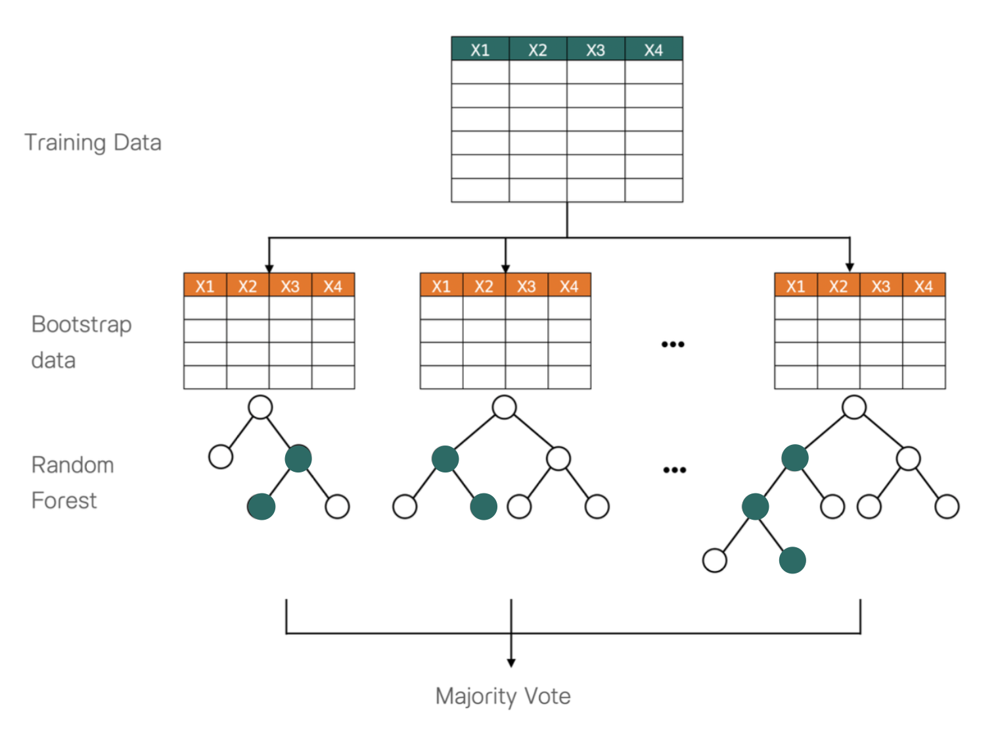
7.2 Out-of-Bag (OOB)
จากตัวอย่าง algorithm ของ random forest ข้างต้นจะเห็นว่ามี hyperparameter ที่จะต้อง fine-tune เนื่องจาก random forest สร้างขึ้นจาก bootstrap dataset การตรวจสอบประสิทธิภาพของโมเดลเพื่อ fine-tune hyperparameters จึงจะใช้การประเมินจาก out-of-bag error โดยที่ out-of-bag error จะคำนวณจากหน่วยข้อมูลที่ไม่ถูกเลือกให้อยู่ภายใต้ bootstrap dataset ในแต่ลละรอบ ซึ่งในทางทฤษฎีจะมีหน่วยข้อมูลแบบ OOB นี้คิดเป็นร้อยละประมาณ 37 ของ original dataset
7.3 Hyperparameters ของ Random Forest
hyperparameter ของ random forest เช่น
- n_trees — จำนวนต้นไม้ของแต่ละ random forest จำนวนต้นไม้มีผลโดยตรงต่อประสิทธิภาพในการทำนาย กล่าวคือหากกำหนดให้มีต้นไม้จำนวนมาก การประมาณประสิทธิภาพในการทำนายจะทำได้อย่างคงเส้นคงวา ส่งผลให้การ fine-tune hyperparameter ทำได้อย่างมีประสิทธิภาพตามไปด้วย อย่างไรก็ตามจำนวนต้นไม้ที่มากเกินไปก็จะใช้ทรัพยากรการประมวลผลที่มากตามไปด้วย
- mtry — จำนวนของ feature ที่จะสุ่มมาสร้าง tree model แต่ละ model ภายใต้ random forest
- cp — หรือ cost of complexity hyperparameter อธิบายโดยละเอียดไปแล้วใน decision tree
- minspit — จำนวนหน่วยข้อมูลขั้นต่ำที่ต้องมีภายในแต่ละ node (node size)
- minbucket — จำนวนหน่วยข้อมูลขั้นต่ำของ Terminal node
- maxdepth. — ความลึกสูงที่สุดของต้นไม้แต่ละต้น
- splitrule
7.4 ตัวอย่างการวิเคราะห์ random forest
ใน R มี package หลายตัวที่สามารถใช้วิเคราะห์ random forest ได้ package หนึ่งที่มีประสิทธิภาพคือ ranger ชุดคำสั่งต่อไปนี้เป็นการใช้ฟังก์ชัน ranger โดยตรงเพื่อวิเคราะห random forest
library(dplyr)
library(ggplot2)
library(rsample)
library(ranger)
library(vip)
Attaching package: 'vip'The following object is masked from 'package:utils':
vilibrary(yardstick)
# importing and preprocessing
dat <- read.csv("https://raw.githubusercontent.com/ssiwacho/2758688_ML/main/week%201/TeacherSalaryData.csv")
dat <- dat[,-1]
summary(dat) rank discipline yrs.since.phd yrs.service
Length:397 Length:397 Min. : 1.00 Min. : 0.00
Class :character Class :character 1st Qu.:12.00 1st Qu.: 7.00
Mode :character Mode :character Median :21.00 Median :16.00
Mean :22.31 Mean :17.61
3rd Qu.:32.00 3rd Qu.:27.00
Max. :56.00 Max. :60.00
sex salary
Length:397 Min. : 57800
Class :character 1st Qu.: 91000
Mode :character Median :107300
Mean :113706
3rd Qu.:134185
Max. :231545 dat1_preproc<- dat %>%
mutate(salary_class = ifelse(salary>=100000,1,0),
salary_class = factor(salary_class,
levels = c(0,1),
labels = c("low","high"))) %>%
select(-salary)
summary(dat1_preproc) rank discipline yrs.since.phd yrs.service
Length:397 Length:397 Min. : 1.00 Min. : 0.00
Class :character Class :character 1st Qu.:12.00 1st Qu.: 7.00
Mode :character Mode :character Median :21.00 Median :16.00
Mean :22.31 Mean :17.61
3rd Qu.:32.00 3rd Qu.:27.00
Max. :56.00 Max. :60.00
sex salary_class
Length:397 low :140
Class :character high:257
Mode :character
ขั้นตอนถัดมาคือแบ่งชุดข้อมูลเป็น training และ test dataset
set.seed(123)
split <- initial_split(dat1_preproc, prop = 0.8, strata = salary_class)
train<-training(split)
test<-testing(split)
table(train$salary_class)
low high
112 205 table(test$salary_class)
low high
28 52 วิเคราะห์ random forest model ด้วยฟังก์ชัน ranger() ในตัวอย่างนี้จะกำหนดให้เป็นค่าเริ่มต้นทั้งหมดก่อน
fit_rf1 <- ranger(salary_class ~ . ,
data = train,
importance = "impurity")
fit_rf1Ranger result
Call:
ranger(salary_class ~ ., data = train, importance = "impurity")
Type: Classification
Number of trees: 500
Sample size: 317
Number of independent variables: 5
Mtry: 2
Target node size: 1
Variable importance mode: impurity
Splitrule: gini
OOB prediction error: 15.14 % vip(fit_rf1)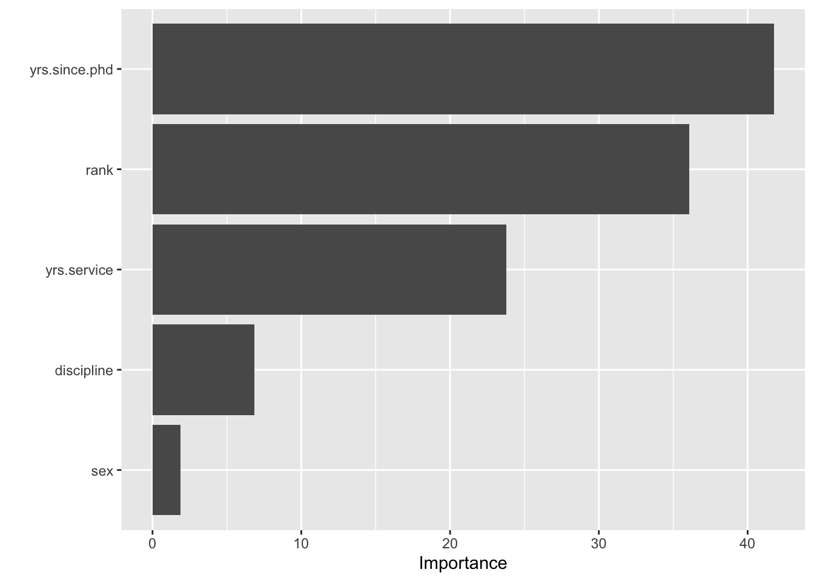
คำนวณค่าทำนายและตรวจสอบความคลาดเคลื่อนของค่าทำนายบนชุดข้อมูล test data
pred_class <- predict(fit_rf1, test, type="response")$predictions
table(pred, test$salary_class)7.5 fine-tune hyperparameters
หัวข้อนี้จะแสดงการ fine-tune hyperparameter ของ random forest ตาม algorithm ที่ในข้างต้น โดยใช้ tidymodel framwork รายละเอียดมีดังนี้
ขั้นแรก นำเข้าข้อมูล และจัดการ label ของข้อมูล
ตัวอย่างนี้จะแปลงข้อมูลตัวแปรตาม salary ให้เป็นตัวแปรแบบจัดประเภทที่มี 2 กลุ่ม คือกลุ่มที่เป็นอาจารย์รายได้สูง (>= 100,000 บาท) และกลุ่มอาจารย์รายได้ต่ำ (< 100,000 บาท)
library(parsnip)
library(recipes)
# importing dataset
dat <- read.csv("https://raw.githubusercontent.com/ssiwacho/2758688_ML/main/week%201/TeacherSalaryData.csv")
glimpse(dat, width = 80)Rows: 397
Columns: 7
$ X <int> 1, 2, 3, 4, 5, 6, 7, 8, 9, 10, 11, 12, 13, 14, 15, 16, 1…
$ rank <chr> "Prof", "Prof", "AsstProf", "Prof", "Prof", "AssocProf",…
$ discipline <chr> "B", "B", "B", "B", "B", "B", "B", "B", "B", "B", "B", "…
$ yrs.since.phd <int> 19, 20, 4, 45, 40, 6, 30, 45, 21, 18, 12, 7, 1, 2, 20, 1…
$ yrs.service <int> 18, 16, 3, 39, 41, 6, 23, 45, 20, 18, 8, 2, 1, 0, 18, 3,…
$ sex <chr> "Male", "Male", "Male", "Male", "Male", "Male", "Male", …
$ salary <int> 139750, 173200, 79750, 115000, 141500, 97000, 175000, 14…dat <- dat %>%
mutate(salary_class = ifelse(salary>=100000,1,0),
salary_class = factor(salary_class, labels=c("low","high")))
glimpse(dat, width = 80)Rows: 397
Columns: 8
$ X <int> 1, 2, 3, 4, 5, 6, 7, 8, 9, 10, 11, 12, 13, 14, 15, 16, 1…
$ rank <chr> "Prof", "Prof", "AsstProf", "Prof", "Prof", "AssocProf",…
$ discipline <chr> "B", "B", "B", "B", "B", "B", "B", "B", "B", "B", "B", "…
$ yrs.since.phd <int> 19, 20, 4, 45, 40, 6, 30, 45, 21, 18, 12, 7, 1, 2, 20, 1…
$ yrs.service <int> 18, 16, 3, 39, 41, 6, 23, 45, 20, 18, 8, 2, 1, 0, 18, 3,…
$ sex <chr> "Male", "Male", "Male", "Male", "Male", "Male", "Male", …
$ salary <int> 139750, 173200, 79750, 115000, 141500, 97000, 175000, 14…
$ salary_class <fct> high, high, low, high, high, low, high, high, high, high…ขั้นที่สอง แบ่งชุดข้อมูล
กำหนด seed number เท่ากับ 123 จากนั้นแบ่งชุดข้อมูลโดยใช้ rsample package ดังนี้
set.seed(123)
split <- initial_split(dat, prop = 0.8)
train<-training(split)
test<-testing(split)ขั้นที่สาม สร้าง recipe object สำหรับจัดการข้อมูล
preproc <- recipe(salary_class ~ ., data = train) %>%
step_select(-X, -salary)ขั้นที่ 4 กำหนดโมเดล (model specification)
ตัวอย่างนี้จะใช้ random forest ใน parsnip สามารถ fit random forest model ได้ด้วย engine หลายตัว ในตัวอย่างนี้จะใช้ ranger ที่มี hyperparameter ให้กำหนดได้ 3 ตัวได้แก่ mtry, trees และ min_n
forest_mod <- rand_forest(mtry = tune(),
trees = 500,
min_n = tune()) %>%
set_engine("ranger") %>%
set_mode("classification")ขั้นที่ 5 สร้าง workflow
ผู้วิเคราะห์ไม่จำเป็นต้องสร้าง workflow ก็สามารถใช้ tune_grid() เพื่อ fine-tune hyperparameter ได้ โดยใช้ parsnip object ที่สร้างขึ้นในขั้น 4 เป็น object ใน tune_grid() ได้เลย อย่างไรก็ตามในสถานการณ์ทั่วไปผู้วิเคราะห์จะเป็นต้อง preprocess ข้อมูลก่อนอยู่แล้ว การใช้ workflow จึงน่าจะสะดวกกว่าในกรณีทั่วไป
rf_workflow <- workflow() %>%
add_recipe(preproc) %>%
add_model(forest_mod)
rf_workflow══ Workflow ════════════════════════════════════════════════════════════════════
Preprocessor: Recipe
Model: rand_forest()
── Preprocessor ────────────────────────────────────────────────────────────────
1 Recipe Step
• step_select()
── Model ───────────────────────────────────────────────────────────────────────
Random Forest Model Specification (classification)
Main Arguments:
mtry = tune()
trees = 500
min_n = tune()
Computational engine: ranger ขั้นที่ 6 เตรียมทำ cross-validation และกำหนด hyperparameter grid
# create folds
folds <- vfold_cv(train, repeats =5, strata = "salary_class")
# create random grid
my_hyparams <- parameters(mtry(range=c(1,5)),
min_n(range=c(10,40)))
my_grid <- grid_random(my_hyparams, size = 20)
my_grid %>% ggplot()+
geom_point(aes(mtry, min_n))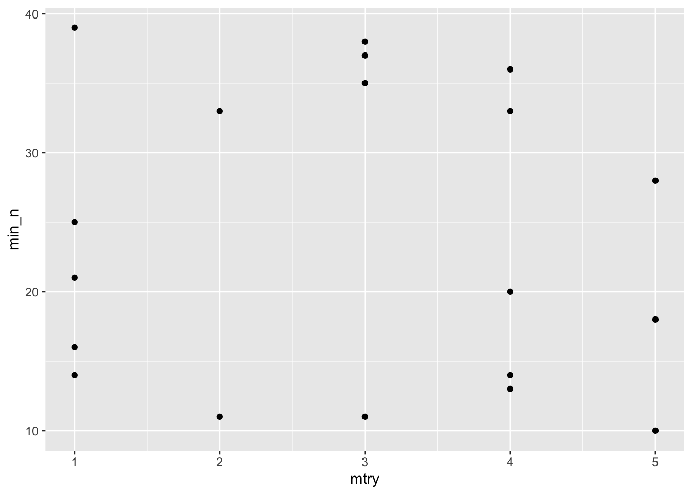
# crete evaluation metrics
eval_metric <- metric_set(roc_auc, sens, spec)ขั้นที่ 7 ทำ CV เพื่อนำข้อมูลมา tune hyperparameters
ฟังก์ชันที่ใช้คือ tune_grid() มีอาร์กิวเมนท์ที่สำคัญได้แก่
resamplesใช้ระบุชุดข้อมูลที่สร้างขึ้นจากกระบวนการสุ่มซ้ำ เช่น k-folds CV หรือ boostraping datasetgridใช้สำหรับระบุ grid ของ hyperparameter ของอัลกอริทึมการเรียนรู้ที่เลือกใช้controlใช้กำหนด option สำหรับควบคุมกระบวนการสุ่มซ้ำ (resample) และปรับแต่งค่า hyperparameter การกำหนดอาร์กิวเมนท์นี้จะต้องกำหนดผ่านฟังก์ชันcontrol_resamples()หรือcontrol_grid()อีกทีหนึ่ง รายละเอียดของฟังก์ชันทั้งสองสามารถศึกษาได้จากคู่มือการใช้งาน (พิมพ์?control_resamplesหรือ?control_grid)metricsใช้กำหนด evalution metrics ที่ผู้วิเคราะห์จะใช้เพื่อประเมินประสิทธิภาพของโมเดลระหว่างการปรับแต่งค่าพารามิเตอร์ การกำหนดอาร์กิวเมนท์นี้ให้ทำผ่านฟังก์ชันmetric_set()ในกรณีที่ไม่ได้กำหนดโปรแกรมจะกำหนดให้ใช้ค่าเริ่มต้น ซึ่งจะเลือกให้เหมาะสมกับ mode ของโมเดล
tuning_results <- rf_workflow %>%
tune_grid(resamples = folds,
grid = my_grid,
control = control_grid(verbose = FALSE,
save_pred = TRUE),
metrics = eval_metric)วิเคราะห์ tuning results
tuning_results %>% autoplot()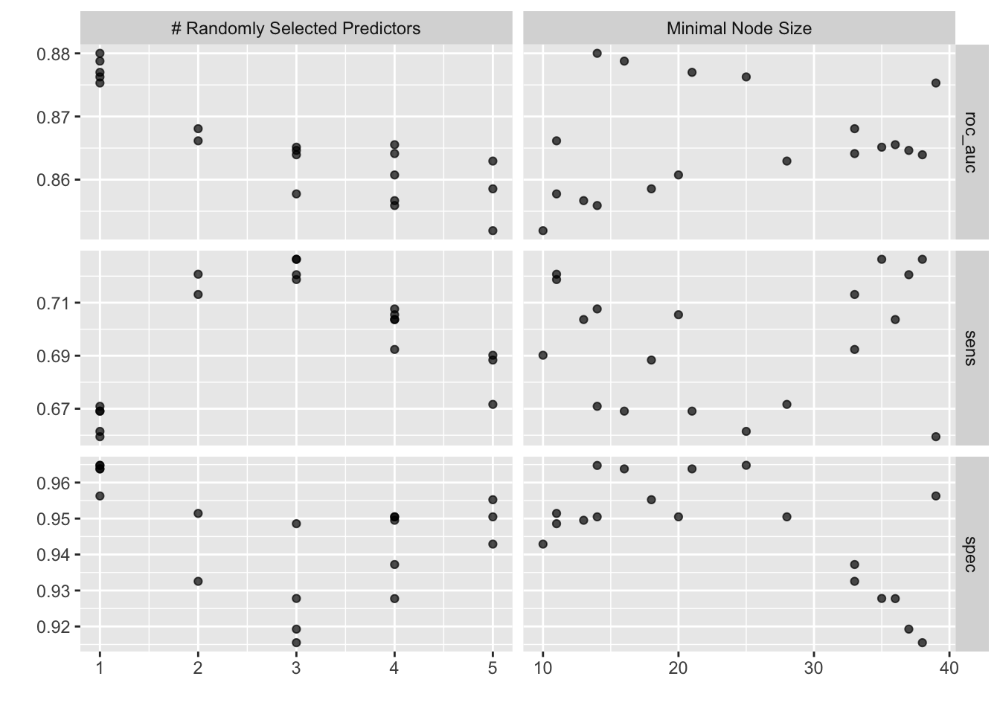
tuning_results %>% collect_metrics(summarize = TRUE)# A tibble: 57 × 8
mtry min_n .metric .estimator mean n std_err .config
<int> <int> <chr> <chr> <dbl> <int> <dbl> <chr>
1 5 18 roc_auc binary 0.859 50 0.0113 Preprocessor1_Model01
2 5 18 sens binary 0.688 50 0.0205 Preprocessor1_Model01
3 5 18 spec binary 0.955 50 0.00658 Preprocessor1_Model01
4 1 21 roc_auc binary 0.877 50 0.0100 Preprocessor1_Model02
5 1 21 sens binary 0.669 50 0.0199 Preprocessor1_Model02
6 1 21 spec binary 0.964 50 0.00570 Preprocessor1_Model02
7 4 14 roc_auc binary 0.856 50 0.0117 Preprocessor1_Model03
8 4 14 sens binary 0.708 50 0.0195 Preprocessor1_Model03
9 4 14 spec binary 0.950 50 0.00827 Preprocessor1_Model03
10 4 33 roc_auc binary 0.864 50 0.0110 Preprocessor1_Model04
# … with 47 more rowstuning_results %>%
collect_metrics(summarize = TRUE) %>%
filter(.metric == "sens") %>%
arrange(desc(mean))# A tibble: 19 × 8
mtry min_n .metric .estimator mean n std_err .config
<int> <int> <chr> <chr> <dbl> <int> <dbl> <chr>
1 3 38 sens binary 0.726 50 0.0189 Preprocessor1_Model14
2 3 35 sens binary 0.726 50 0.0189 Preprocessor1_Model19
3 2 11 sens binary 0.721 50 0.0195 Preprocessor1_Model18
4 3 37 sens binary 0.721 50 0.0187 Preprocessor1_Model07
5 3 11 sens binary 0.719 50 0.0191 Preprocessor1_Model08
6 2 33 sens binary 0.713 50 0.0205 Preprocessor1_Model16
7 4 14 sens binary 0.708 50 0.0195 Preprocessor1_Model03
8 4 20 sens binary 0.705 50 0.0195 Preprocessor1_Model12
9 4 13 sens binary 0.704 50 0.0196 Preprocessor1_Model06
10 4 36 sens binary 0.704 50 0.0202 Preprocessor1_Model15
11 4 33 sens binary 0.692 50 0.0208 Preprocessor1_Model04
12 5 10 sens binary 0.690 50 0.0197 Preprocessor1_Model09
13 5 18 sens binary 0.688 50 0.0205 Preprocessor1_Model01
14 5 28 sens binary 0.672 50 0.0212 Preprocessor1_Model10
15 1 14 sens binary 0.671 50 0.0198 Preprocessor1_Model17
16 1 21 sens binary 0.669 50 0.0199 Preprocessor1_Model02
17 1 16 sens binary 0.669 50 0.0199 Preprocessor1_Model13
18 1 25 sens binary 0.661 50 0.0192 Preprocessor1_Model11
19 1 39 sens binary 0.659 50 0.0197 Preprocessor1_Model05tuning_results %>%
collect_metrics(summarize = TRUE) %>%
filter(.metric == "roc_auc") %>%
arrange(desc(mean))# A tibble: 19 × 8
mtry min_n .metric .estimator mean n std_err .config
<int> <int> <chr> <chr> <dbl> <int> <dbl> <chr>
1 1 14 roc_auc binary 0.880 50 0.00963 Preprocessor1_Model17
2 1 16 roc_auc binary 0.879 50 0.00997 Preprocessor1_Model13
3 1 21 roc_auc binary 0.877 50 0.0100 Preprocessor1_Model02
4 1 25 roc_auc binary 0.876 50 0.0101 Preprocessor1_Model11
5 1 39 roc_auc binary 0.875 50 0.00991 Preprocessor1_Model05
6 2 33 roc_auc binary 0.868 50 0.0107 Preprocessor1_Model16
7 2 11 roc_auc binary 0.866 50 0.00979 Preprocessor1_Model18
8 4 36 roc_auc binary 0.866 50 0.0109 Preprocessor1_Model15
9 3 35 roc_auc binary 0.865 50 0.0108 Preprocessor1_Model19
10 3 37 roc_auc binary 0.865 50 0.0107 Preprocessor1_Model07
11 4 33 roc_auc binary 0.864 50 0.0110 Preprocessor1_Model04
12 3 38 roc_auc binary 0.864 50 0.0109 Preprocessor1_Model14
13 5 28 roc_auc binary 0.863 50 0.0110 Preprocessor1_Model10
14 4 20 roc_auc binary 0.861 50 0.0111 Preprocessor1_Model12
15 5 18 roc_auc binary 0.859 50 0.0113 Preprocessor1_Model01
16 3 11 roc_auc binary 0.858 50 0.0108 Preprocessor1_Model08
17 4 13 roc_auc binary 0.857 50 0.0115 Preprocessor1_Model06
18 4 14 roc_auc binary 0.856 50 0.0117 Preprocessor1_Model03
19 5 10 roc_auc binary 0.852 50 0.0116 Preprocessor1_Model09tuning_results %>%
collect_metrics(summarize = TRUE) %>%
filter(.metric == "sens") %>%
ggplot(aes(x = std_err, y= mean))+
geom_point()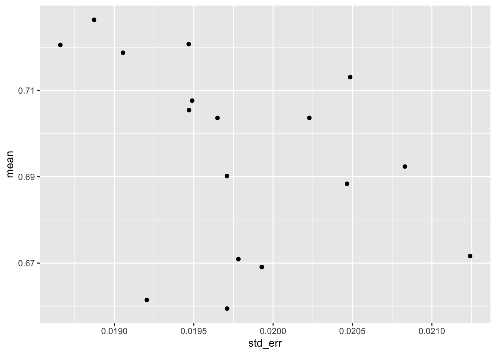
best <- show_best(tuning_results, n=6, metric = "sens")
best[1,]# A tibble: 1 × 8
mtry min_n .metric .estimator mean n std_err .config
<int> <int> <chr> <chr> <dbl> <int> <dbl> <chr>
1 3 38 sens binary 0.726 50 0.0189 Preprocessor1_Model14ขั้นที่ 8 Finalized
RF_final <- rf_workflow %>%
finalize_workflow(best[1,]) %>%
last_fit(split,
metrics =eval_metric)
RF_final %>%
extract_fit_engine()Ranger result
Call:
ranger::ranger(x = maybe_data_frame(x), y = y, mtry = min_cols(~3L, x), num.trees = ~500, min.node.size = min_rows(~38L, x), num.threads = 1, verbose = FALSE, seed = sample.int(10^5, 1), probability = TRUE)
Type: Probability estimation
Number of trees: 500
Sample size: 317
Number of independent variables: 5
Mtry: 3
Target node size: 38
Variable importance mode: none
Splitrule: gini
OOB prediction error (Brier s.): 0.1078116 RF_final %>%
collect_metrics()# A tibble: 3 × 4
.metric .estimator .estimate .config
<chr> <chr> <dbl> <chr>
1 sens binary 0.706 Preprocessor1_Model1
2 spec binary 0.891 Preprocessor1_Model1
3 roc_auc binary 0.850 Preprocessor1_Model17.6 Grid Search methods
ปัจจัยสำคัญตัวหนึ่งที่มีผลโดยตรงต่อประสิทธิภาพการปรับแต่ง hyperparameter คือการกำหนด grid ของ hyperparameter ใน tidymodel สามารถจำแนกได้เป็น 2 ประเภท ได้แก่
regular grid
nonregular grid
รายละเอียดมีดังนี้
Regular grid
regular grid เป็น grid ของ hyperparameter ที่สร้างขึ้นจากส่วนผสม (combination) ของค่าที่เป็นไปได้ทั้งหมดของ hyperparameter ที่ต้องการวิเคราะห์ การสร้าง regular grid มี 2 ขั้นตอน ขั้นตอนแรกคือการกำหนดค่าที่เป็นไปได้ของ hyperparameter แต่ละตัว และขั้นที่สองคือการสร้าง grid ของค่าที่เป็นไปได้ดังกล่าว ผลลัพธ์ที่ได้คือ hyperparameter space ที่สมบูรณ์
การสร้าง regular grid ใน R สามารถทำได้หลายวิธีการ วิธีการแรกคือการใช้ฟังก์ชัน expand.grid() วิธีการที่สองคือการใช้ฟังก์ชัน crossing() ของ package tidyr และวิธีการที่สามคือการใช้ฟังก์ชัน grid_regular() ของ package dials
my_grid <- expand.grid(
mtry = 1:5,
min_n = seq(10,50,5)
)
head(my_grid) mtry min_n
1 1 10
2 2 10
3 3 10
4 4 10
5 5 10
6 1 15tail(my_grid) mtry min_n
40 5 45
41 1 50
42 2 50
43 3 50
44 4 50
45 5 50crossing(
mtry = 1:5,
min_n = seq(10,50,5)
)# A tibble: 45 × 2
mtry min_n
<int> <dbl>
1 1 10
2 1 15
3 1 20
4 1 25
5 1 30
6 1 35
7 1 40
8 1 45
9 1 50
10 2 10
# … with 35 more rowsmy_params <- extract_parameter_set_dials(rf_workflow) %>%
update(mtry = mtry(range=c(1,5)),
min_n = min_n(range=c(20,60)))
my_reggrid <- grid_regular(my_params, levels = 5)
my_reggrid %>%
ggplot()+
geom_point(aes(x = mtry, y = min_n))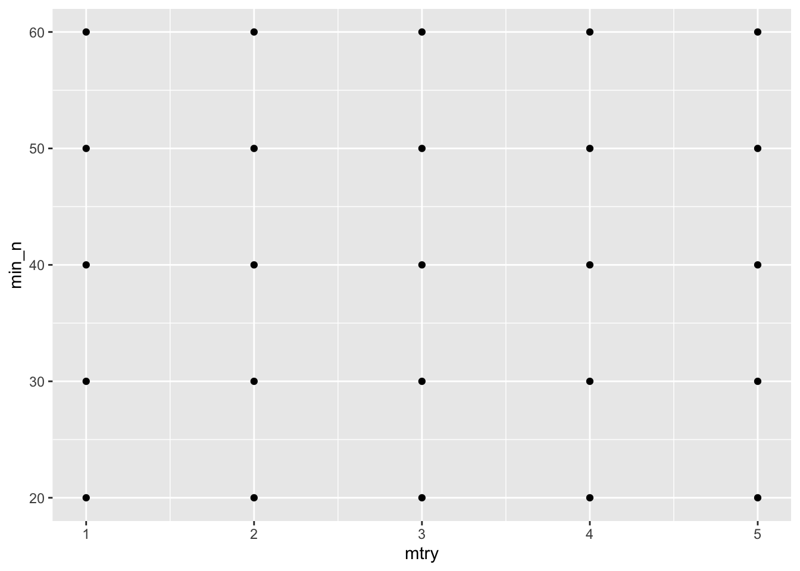
ข้อจำกัดของ regular grid คือใช้ทรัพยากรในการประมวลผลมาก โดยเฉพาะกับโมเดลที่มี hyperparameter จำนวนมาก และมีการทวนซ้ำหลายรอบ
Irregular grid
มีหลายวิธีที่จะช่วยลดการประมวลผลของ regular grid ลงได้ วิธีการแรกคือ random grid ที่ใช้วิธีการสุ่มตัวอย่าง เพื่อสุ่ม grid มาจากประชากรของ grid ที่เป็นไปได้
my_randomgrid <- grid_random(my_params, size = 10)
my_randomgrid %>%
ggplot()+
geom_point(aes(x = mtry, y = min_n))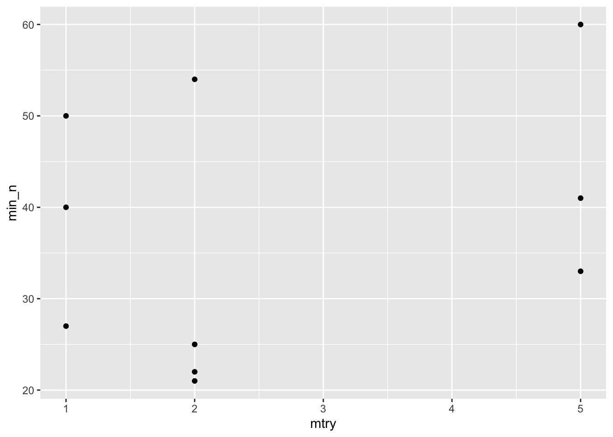
my_randomgrid <- grid_random(my_params, size = 25)
my_randomgrid %>%
ggplot()+
geom_point(aes(x = mtry, y = min_n))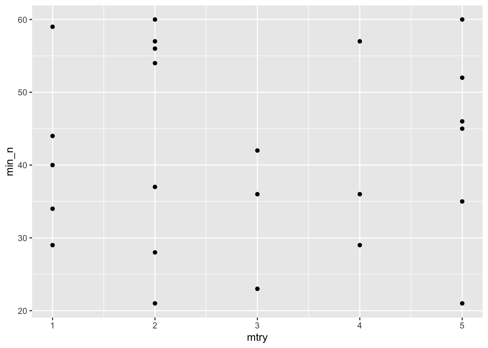
my_randomgrid <- grid_random(my_params, size = 50)
my_randomgrid %>%
ggplot()+
geom_point(aes(x = mtry, y = min_n))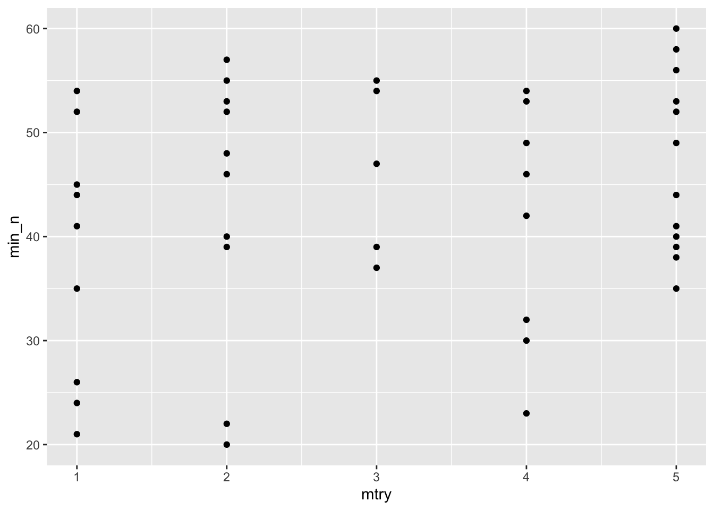
ข้อจำกัดของ random grid คือ หาก generate grid ขนาดเล็ก มีโอกาสที่จะได้ grid ที่มีความใกล้เคียงหรือซ้อนทับกันมากเกินไป กล่าวคือ hyperparameter space ที่สร้างขึ้นอาจขาดคุณสมบัติความเป็นตัวแทน ผลการวิเคราะห์ที่ได้จึงอาจทำให้การปรับแต่ง hyperparameter มีความคลาดเคลื่อน
จากข้อจำกัดดังกล่าวการสร้าง grid ของ hyperparameter ที่มีประสิทธิภาพมากกว่า random grid คือการใช้วิธีในกลุ่ม space-filling design ที่มีอัลกอริทึมภายใต้วิธีการในกลุ่มนี้หลายตัว เช่น latin hypercubes, maximum entropy designs, maximum projection designs เป็นต้น
my_latingrid <- grid_latin_hypercube(my_params, size = 25)
my_latingrid %>%
ggplot()+
geom_point(aes(x = mtry, y = min_n))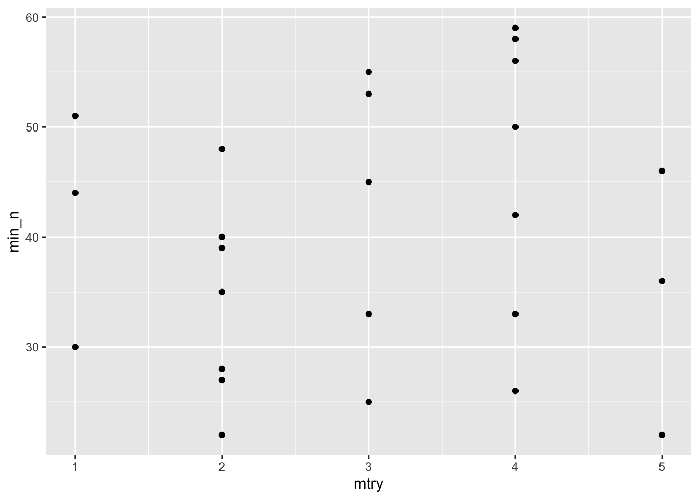
my_maxentrp <- grid_max_entropy(my_params, size = 25)
my_maxentrp %>%
ggplot()+
geom_point(aes(x = mtry, y = min_n))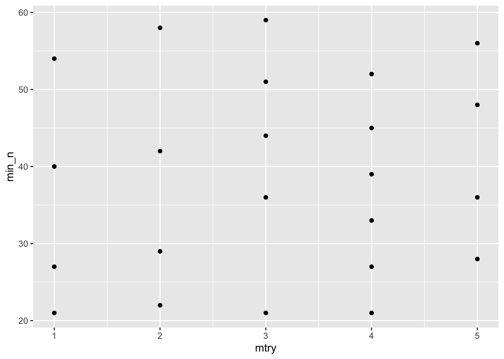
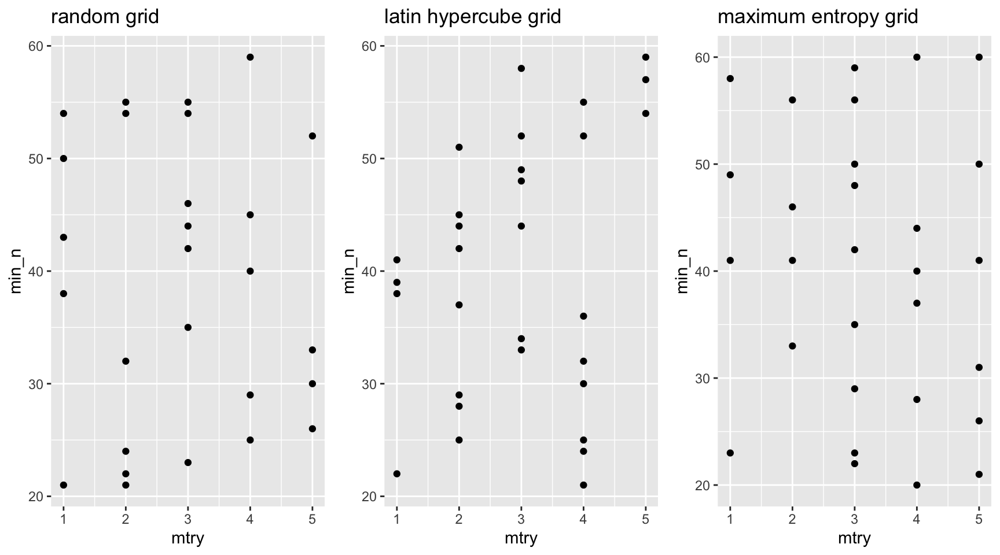
บทที่ 8: workflow set
ในทางปฏิบัติเรามักจะมีโมเดลคู่แข่งขันหลายตัวที่จะนำมาพัฒนาควบคู่กัน ภายใต้ tidymodel framework ผู้วิเคราะห์สามารถสร้าง workflow set เพื่อ fine tune hyperparameter และเปรียบเทียบโมเดลหลาย ๆ ตัวไปพร้อม ๆ กันในการประมวลผลรอบเดียวได้
ผู้วิเคราะห์ต้องการพัฒนาโมเดลจำแนก class โดยมีโมเดลคู่แข่งขันที่เลือกมาใช้งานได้แก่
logistic regression with regulization
decision tree
random forest (เป็นการบ้าน)
ชุดข้อมูลที่ใช้เป็นตัวอย่างคือชุดข้อมูล parabolic ซึ่งเป็นชุดข้อมูลตัวอย่างของ tidymodels ผลการสำรวจข้่อมูลด้านล่างจะเห็นว่า ชุดข้อมูลประกอบด้วยข้อมูลของหน่วยข้อมูลจำนวน 500 หน่วย มีตัวแปรตามแบบจัดประเภท class และตัวแปรอิสระเชิงปริมาณ 2 ตัวได้แก่ x1 และ x2 ตามลำดับ
#importing data
data(parabolic)
glimpse(parabolic)Rows: 500
Columns: 3
$ X1 <dbl> 3.291779227, 1.465839693, 1.660986913, 1.602301296, 2.165003287,…
$ X2 <dbl> 1.66108928, 0.41398566, 0.79147013, 0.27639110, 3.16557011, 3.82…
$ class <fct> Class1, Class2, Class2, Class2, Class1, Class1, Class2, Class1, …# splitting data
split <- initial_split(data = parabolic)
train <- training(split)
test <- testing(split)ผู้วิเคราะห์สำรวจความสัมพันธ์ระหว่างตัวแปรตามกับตัวแปรอิสระเบื้องต้น ได้ผลดังแผนภาพด้านล่าง
#exploring
train %>%
ggplot(aes(x = X1, y = X2, col=class))+
geom_point(alpha=0.7)+
theme_light()+
theme(legend.position="top")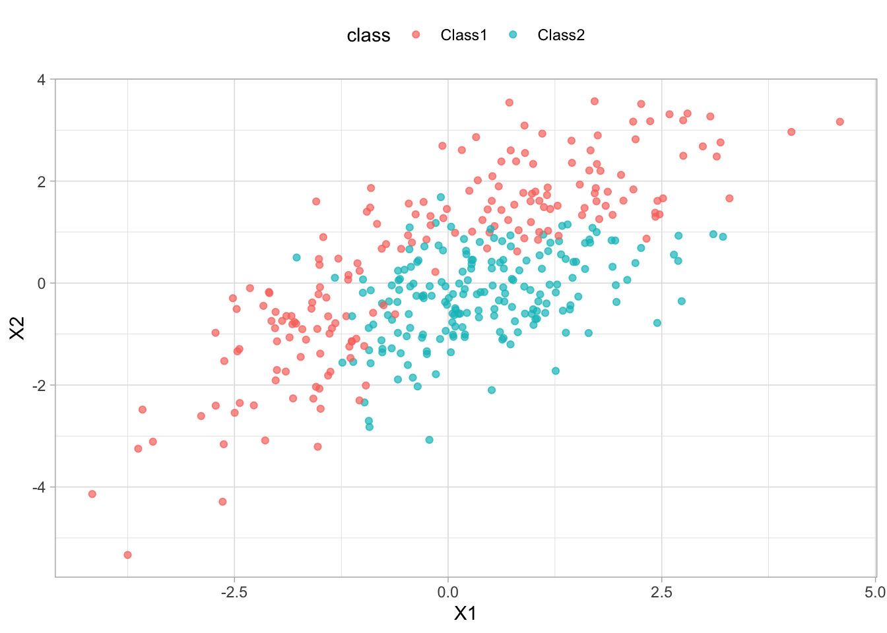
การวิเคราะห์นี้มีการพัฒนา ML จำนวน 2 ตัวได้แก่ regularized logistic regression และ decision tree ที่มีการทำ preprocessing แตกต่างกัน การทำ workflow set ยอมให้ผู้วิเคราะห์กำหนด preprocessing ที่แตกต่างกันกับ model specification ที่กำหนดได้ ดังตัวอย่างต่อไปนี้
#preprocessing
base_recipe <- recipe(class ~ . ,data= train)
norm_recipe <- base_recipe %>%
step_normalize(all_numeric_predictors())
# model specification
## - 1 regularized logistic regression
regular_logit <- logistic_reg(penalty= tune(),
mixture = tune()) %>%
set_engine("glmnet")%>%
set_mode("classification")
## - 2 decision tree
tree_mod <- decision_tree(cost_complexity = tune(),
min_n = tune())%>%
set_engine("rpart")%>%
set_mode("classification")
# creat workflowset
my_workflowset <- workflow_set(
preproc = list(norm = norm_recipe,
base = base_recipe),
models = list(reg_logit = regular_logit,
cart = tree_mod),
cross = FALSE
)
my_workflowset# A workflow set/tibble: 2 × 4
wflow_id info option result
<chr> <list> <list> <list>
1 norm_reg_logit <tibble [1 × 4]> <opts[0]> <list [0]>
2 base_cart <tibble [1 × 4]> <opts[0]> <list [0]>นำ workflow set ที่สร้างมาผ่านกระบวนการ tune hyperapameter โดยฟังก์ชันที่จะใช้คือ workflow_map() แทน tune_grid()
ตัวอย่างด้านล่างมีการระบุ grid = 20 แปลว่าให้ฟังก์ชันสร้าง hyperparameter grid ให้โดยใช้ค่าเริ่มต้นจำนวน 25 จุด ทั้งนี้ค่าเริ่มต้นของ tidymodel จะใช้อัลกอริทึม maximum entropy ในการกำหนด grid
# Tuning Hypeparameter
eval_metrics <- metric_set(accuracy,roc_auc, sens, spec)
folds <- vfold_cv(data = train, v = 10)
all_tune <- my_workflowset %>%
workflow_map(resamples = folds,
grid = 20,
verbose = TRUE,
metrics = eval_metrics)i 1 of 2 tuning: norm_reg_logit✔ 1 of 2 tuning: norm_reg_logit (54.6s)i 2 of 2 tuning: base_cart✔ 2 of 2 tuning: base_cart (51.3s)rank_results(all_tune)# A tibble: 160 × 9
wflow_id .config .metric mean std_err n prepr…¹ model rank
<chr> <chr> <chr> <dbl> <dbl> <int> <chr> <chr> <int>
1 base_cart Preprocessor1_Mode… accura… 0.901 0.0142 10 recipe deci… 1
2 base_cart Preprocessor1_Mode… roc_auc 0.923 0.0203 10 recipe deci… 1
3 base_cart Preprocessor1_Mode… sens 0.891 0.0132 10 recipe deci… 1
4 base_cart Preprocessor1_Mode… spec 0.909 0.0215 10 recipe deci… 1
5 base_cart Preprocessor1_Mode… accura… 0.901 0.0142 10 recipe deci… 2
6 base_cart Preprocessor1_Mode… roc_auc 0.932 0.0184 10 recipe deci… 2
7 base_cart Preprocessor1_Mode… sens 0.896 0.0143 10 recipe deci… 2
8 base_cart Preprocessor1_Mode… spec 0.905 0.0243 10 recipe deci… 2
9 base_cart Preprocessor1_Mode… accura… 0.901 0.0142 10 recipe deci… 3
10 base_cart Preprocessor1_Mode… roc_auc 0.932 0.0184 10 recipe deci… 3
# … with 150 more rows, and abbreviated variable name ¹preprocessorall_tune %>% autoplot(metric = "roc_auc")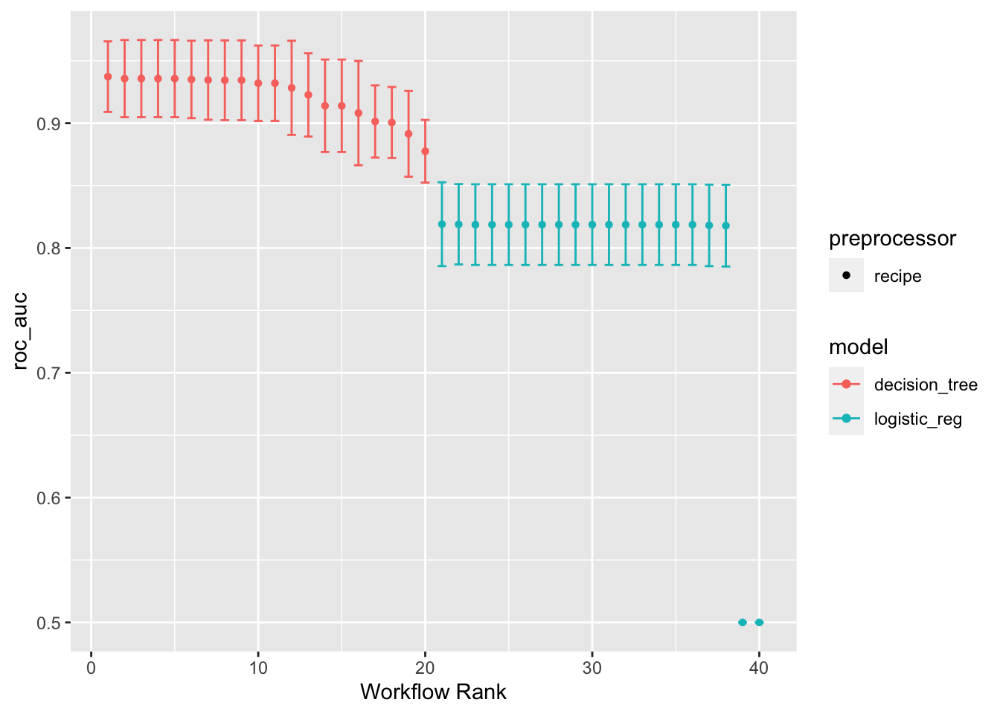
จากผลการวิเคราะห์ข้างต้นแสดงให้เห็นว่า decision tree มีประสิทธิภาพสูงกว่า regularized logistic regression เราสามารถดึงข้อมูลของ regularized logistic regression ขึ้นมาได้โดยใช้คำสั่งต่อไปนี้
all_tune %>% autoplot(metric = "sens", id = "base_cart")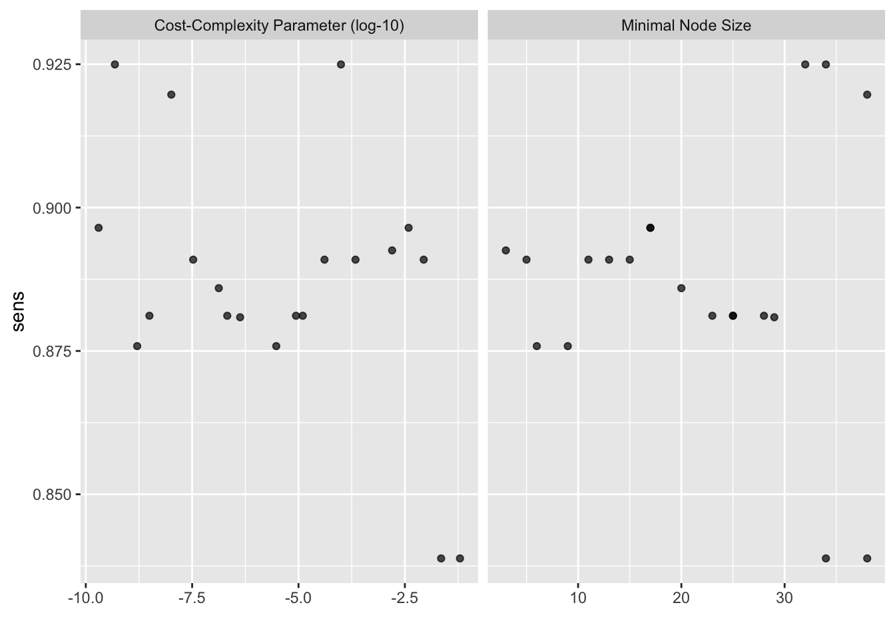
ฟังก์ชัน extract_workflow_set_result() ใช้ดึงผลการ fine-tune hyperparameter ของแต่ละโมเดลภายใต้ workflow set ขึ้นมาวิเคราะห์ในเชิงลึกต่อได้อีก
simple_cart_results<- all_tune %>%
extract_workflow_set_result(id = "base_cart")
simple_cart_results# Tuning results
# 10-fold cross-validation
# A tibble: 10 × 4
splits id .metrics .notes
<list> <chr> <list> <list>
1 <split [337/38]> Fold01 <tibble [80 × 6]> <tibble [0 × 3]>
2 <split [337/38]> Fold02 <tibble [80 × 6]> <tibble [0 × 3]>
3 <split [337/38]> Fold03 <tibble [80 × 6]> <tibble [0 × 3]>
4 <split [337/38]> Fold04 <tibble [80 × 6]> <tibble [0 × 3]>
5 <split [337/38]> Fold05 <tibble [80 × 6]> <tibble [0 × 3]>
6 <split [338/37]> Fold06 <tibble [80 × 6]> <tibble [0 × 3]>
7 <split [338/37]> Fold07 <tibble [80 × 6]> <tibble [0 × 3]>
8 <split [338/37]> Fold08 <tibble [80 × 6]> <tibble [0 × 3]>
9 <split [338/37]> Fold09 <tibble [80 × 6]> <tibble [0 × 3]>
10 <split [338/37]> Fold10 <tibble [80 × 6]> <tibble [0 × 3]>simple_cart_results %>% collect_metrics(summarise = T)# A tibble: 80 × 8
cost_complexity min_n .metric .estimator mean n std_err .config
<dbl> <int> <chr> <chr> <dbl> <int> <dbl> <chr>
1 0.00000300 9 accuracy binary 0.883 10 0.0126 Preprocessor1_…
2 0.00000300 9 roc_auc binary 0.908 10 0.0254 Preprocessor1_…
3 0.00000300 9 sens binary 0.876 10 0.0125 Preprocessor1_…
4 0.00000300 9 spec binary 0.887 10 0.0208 Preprocessor1_…
5 0.0000000334 13 accuracy binary 0.893 10 0.0158 Preprocessor1_…
6 0.0000000334 13 roc_auc binary 0.914 10 0.0225 Preprocessor1_…
7 0.0000000334 13 sens binary 0.891 10 0.0132 Preprocessor1_…
8 0.0000000334 13 spec binary 0.894 10 0.0225 Preprocessor1_…
9 0.000000211 28 accuracy binary 0.891 10 0.0159 Preprocessor1_…
10 0.000000211 28 roc_auc binary 0.936 10 0.0188 Preprocessor1_…
# … with 70 more rowssimple_cart_results %>% autoplot()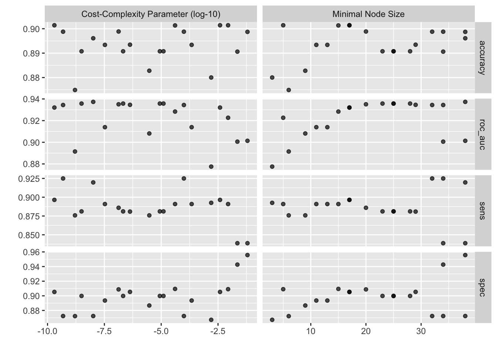
show_best(simple_cart_results, n=5, metric = "sens")# A tibble: 5 × 8
cost_complexity min_n .metric .estimator mean n std_err .config
<dbl> <int> <chr> <chr> <dbl> <int> <dbl> <chr>
1 9.95e- 5 32 sens binary 0.925 10 0.0195 Preprocessor1_Mo…
2 4.83e-10 34 sens binary 0.925 10 0.0195 Preprocessor1_Mo…
3 1.02e- 8 38 sens binary 0.920 10 0.0224 Preprocessor1_Mo…
4 3.87e- 3 17 sens binary 0.896 10 0.0143 Preprocessor1_Mo…
5 2.00e-10 17 sens binary 0.896 10 0.0143 Preprocessor1_Mo…ขั้นตอนสุดท้ายคือการ finalized model …